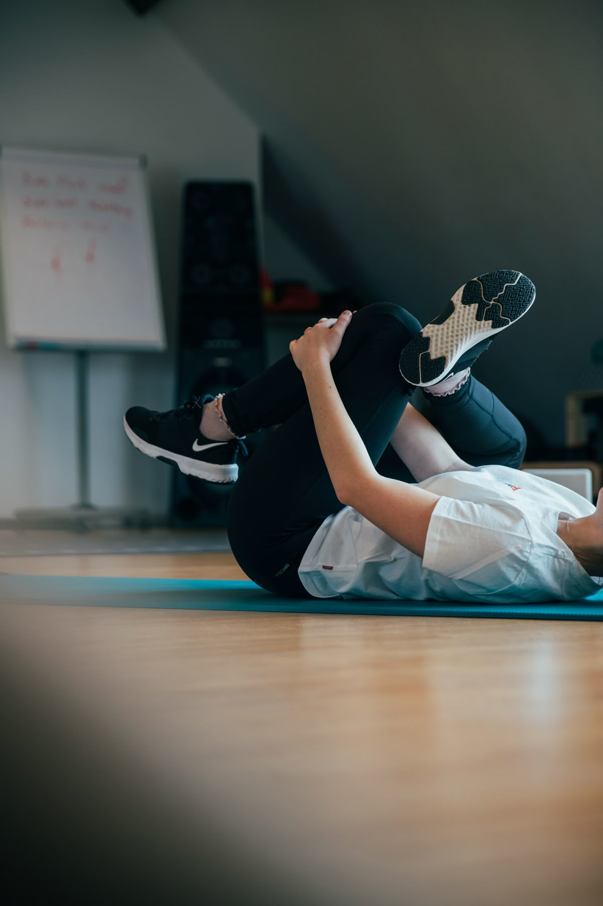
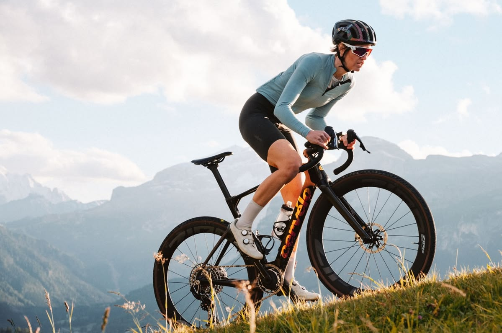

Physical Activity and Fitness: Building Movement Into Everyday Life
Staying physically active is one of the most reliable ways to protect long-term health, yet it's often the first thing that slips when life gets busy. This page focuses specifically on physical activity and fitness - why it matters, the different ways it can fit into a day, and how to keep it going once the initial motivation fades, in support of SDG 3: Good Health and Well-Being.
Why Physical Activity Matters
Regular movement strengthens the heart, supports healthy muscles and joints, and helps regulate mood and energy levels throughout the day. It also plays a direct role in reducing the risk of long-term conditions such as heart disease and type 2 diabetes. None of this requires elite fitness - even moderate, regular activity delivers most of these benefits, which is what makes physical activity such an accessible habit for almost everyone.

Types of Exercise That Count
Fitness isn't limited to the gym. Cardio activities such as walking, jogging or cycling build heart and lung endurance, while strength-based movement such as bodyweight exercises or resistance training keeps muscles and bones strong as people get older. Flexibility work, like stretching or yoga, supports mobility and helps reduce the risk of injury during other activities. A well-rounded routine usually draws a little from each category rather than focusing on just one.

Building an Active Routine
Consistency matters more than intensity when it comes to building a lasting fitness habit. Choosing activities that are genuinely enjoyable, scheduling them at a realistic time of day, and starting with a manageable amount all make it far more likely the habit will stick.
- Start with short sessions and build up gradually rather than aiming too high too soon.
- Pick a consistent time of day so activity becomes part of the daily routine.
- Choose an activity that feels enjoyable, not just effective, to stay motivated long-term.

Overcoming Common Barriers
Lack of time, low motivation, and past injuries are some of the most common reasons people stop being active. Breaking activity into shorter sessions throughout the day, exercising with a friend for accountability, and choosing lower-impact options while recovering from injury can all help keep movement possible even when circumstances aren't ideal.
Small Actions in Practice
Improving fitness doesn't require a complete lifestyle overhaul. Picking one small change - a short walk after a meal, a few minutes of stretching in the morning, or taking the stairs instead of the lift - is a realistic starting point. You can explore how a habit like this fits alongside other everyday actions using the SDG Action Impact Simulator.